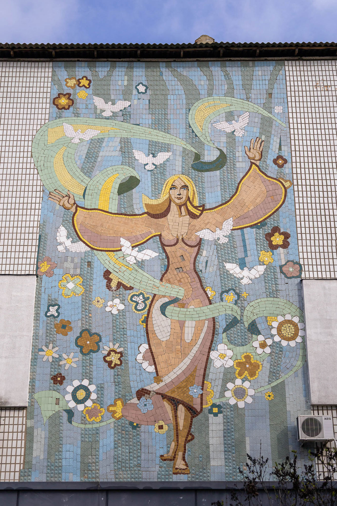
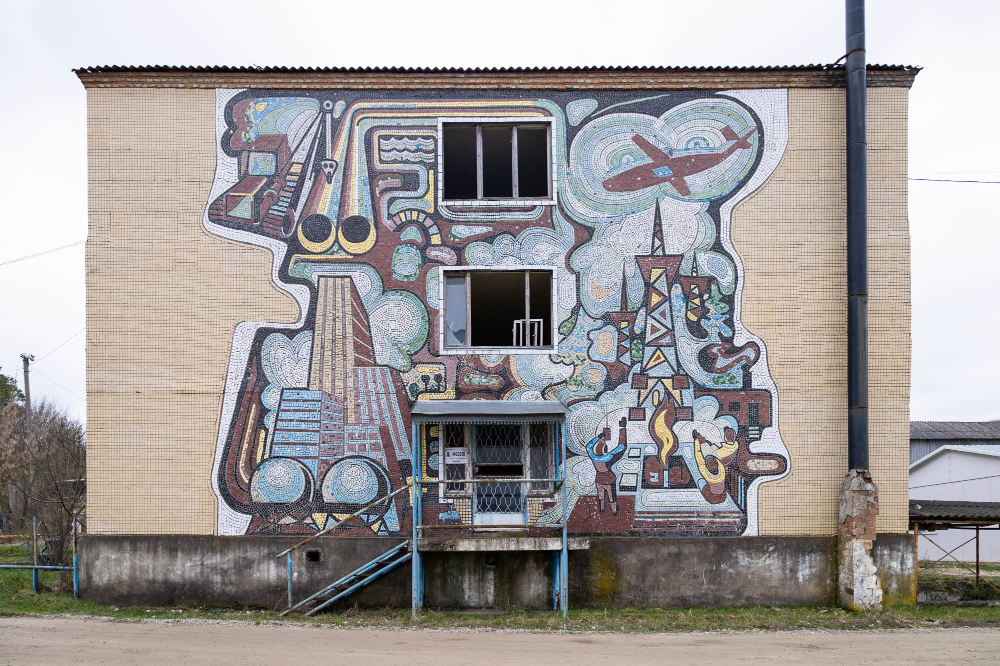
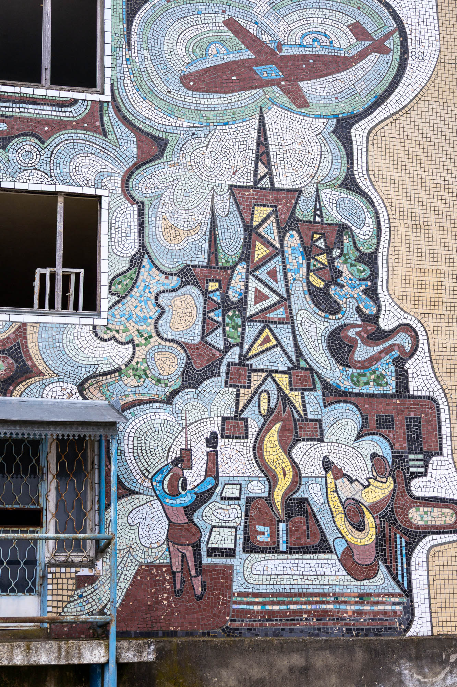
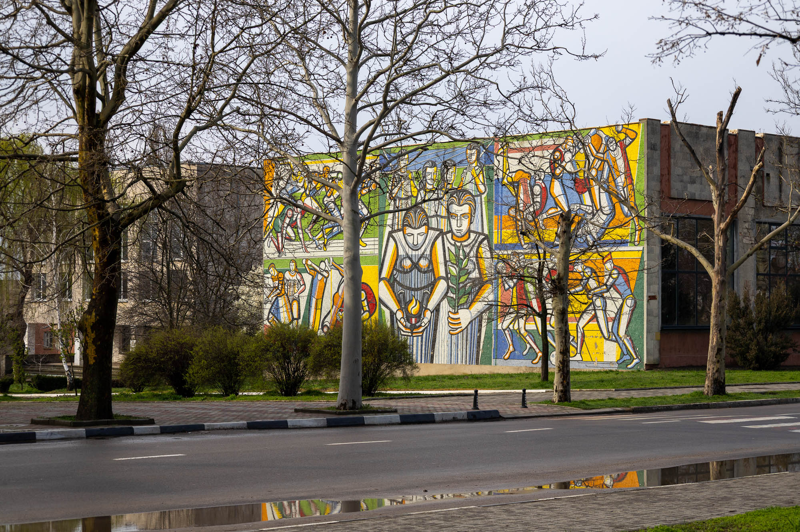
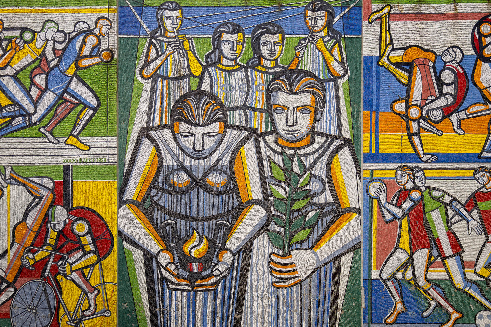
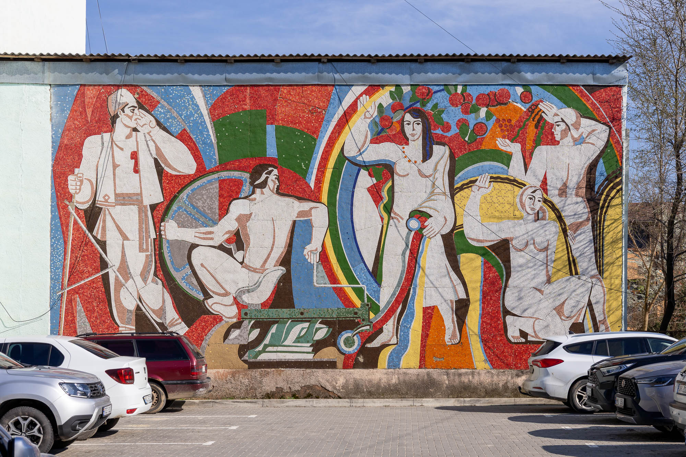
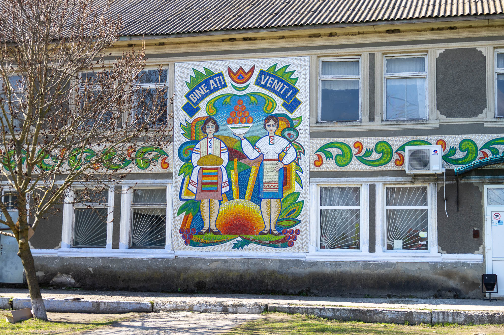
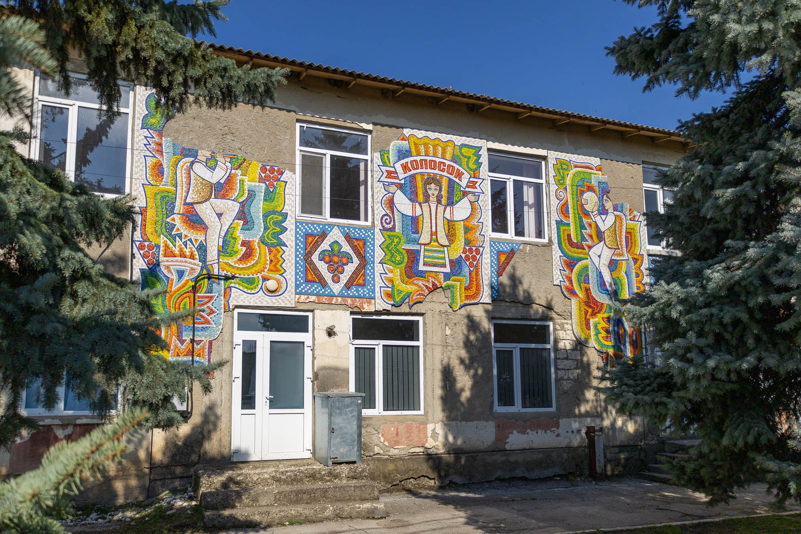

Bordered by the Dniester River to the east and the Prut River to the west, Moldova emerged from 51 years of Soviet rule in 1992. While this era harshly shaped the people, land, and economy of this region, it also fostered a legacy of public mosaic art. Here are some of my favourites.
Theoretical High School Sergei Rahmaninov mosaic
On the side of a high school in Cahul is this glowing mosaic. The different warm shapes contrast so nicely with the dashes of cool blue. Likely it depicts Mother Moldova and the fertile land fuelling the country's wine industry.
Unknown artist, 1988. Location: 45.894616, 28.189996
Mother Moldova mosaic
This piece offers another version of the Eastern European “Mother of the Nation” archetype. In this mosaic, she is surrounded by ribbons, doves, and floral motifs, all set against the backdrop of the Moldovan forest.
By Unknown artist, 1970s. Location: 45.907100, 28.190067

GAS Industry mosaic
One of the most common sights in Moldova is a gas pipe: rising out of the ground, running down roads, and twisting into houses. This mosaic celebrates this development and the improved quality of life gas brought. The best view of this mosaic is on a company's private property, but if you smile and greet the security guard with a photography hand signal, he'll happily let you in to see it up close.
Unknown artist, unknown year. Location: 46.834686, 28.568044


Măcăreşti Farm mosaic
The last remaining building of a collective farm, right near the Romanian border, protects this mosaic depicting an industrialised apple farm.
Unknown artist, unknown year. Location: 47.070443, 27.950367

Sports School mosaic
The most popular mosaic in all of Cahul is on the side of the sports hall on the south end of the city park. It depicts the rituals and events of sports, including running, wrestling, cycling, and basketball.
By Gheorghii Hadjioglov, 1989. Location: 45.901132, 28.188547


Colourful Industry mosaic
On the side of the main police station in Ungheni is this beautiful mosaic. Industrial production seems to be the theme here, with design, labour, science, and the fertility of the Moldovan land being the main themes.
Unknown artist, unknown year. Location: 47.207846, 27.802289

Ișcălău mosaics
A small rural town, about 30 minutes' drive south of Bălți, is home to these two final mosaics. The first with “BINE AȚI VENIT!” is saying welcome to the town, while the second with “КОЛОСОК” is referencing a wheat spikelet (wheat, rye, or barley). A symbol of hard work and the bread of life.
Unknown artists, unknown years. Location: 47.571347, 27.821482

